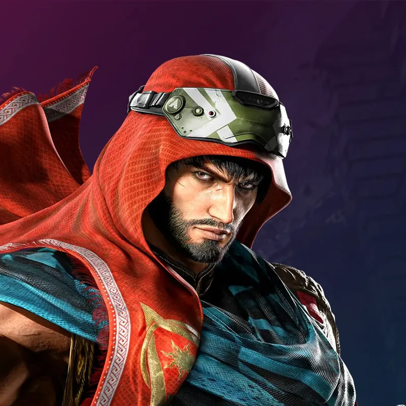

THE NEXT BATTLE / 01
沙欣SHAHEEN
读懂距离。看见判定。
键盘 · 触屏 · 手柄，一次真正可操作的 3D 训练。
原型素材说明沙欣外观、骨骼动作与“三岛道场”均为原创示意；碰撞、移动和连段规则待实测，不等同原版《铁拳8》。可玩的指令以右侧列表为准。

SHAHEEN PLAYER 01
180 / 180
∞TRAINING
TRAINING DUMMY CPU
180 / 180
攻击体（有效帧）受击体推挤体角色间碰撞采用骨骼驱动胶囊体
↑↓←→
W A S D / 方向键N八方向输入支持 USB / 蓝牙手柄
同时按下可输入 3+4 / 1+3 / 2+4
当前招式待机
—状态 / 当前帧待机
—最近结果等待输入
—已实现指令的发生、伤害、防御及命中帧标记引用当前图鉴快照（2026-07-27，补丁版本未标定）。有明确总收招 t 值时采用该值；其余收招、攻击轨迹、接触体积、重力与派生窗口均为原创训练参数。投技和倒地采用简化动画；未实现 Heat、Rage、拆投、完整起身与墙体破坏。此原型用于交互与战斗系统验证，不用于验证原版连段或横移对策。
招式数据来源 ↗